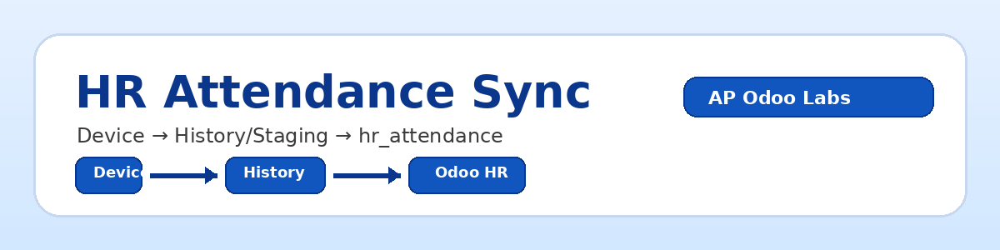
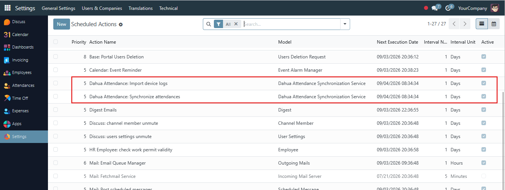

A free, native Odoo 18 connector for Dahua access-control attendance logs.
The Odoo server needs network access to the devices. TLS verification is enabled by default and should only be disabled for a trusted device with a self-signed certificate.
The module creates two hourly scheduled actions. Both are disabled by default so an administrator can review the configuration and test them before activation.

Connects to every active Dahua device and imports access-control events for the configured period. Imported events are stored as duplicate-safe Dahua attendance logs, providing an auditable source before employee attendance records are created.
Matches unsynchronized device logs to employees by Dahua User ID, groups punches by employee and local business day, then creates or updates Odoo attendance using the first punch as check-in and the last punch as check-out.
Odoo 18.0 Community and Enterprise. Requires the standard Python packages requests and pytz.
Released under LGPL-3 by AP Odoo Labs. Documentation is included in the module README.
Copyright 2026 AP Odoo Labs